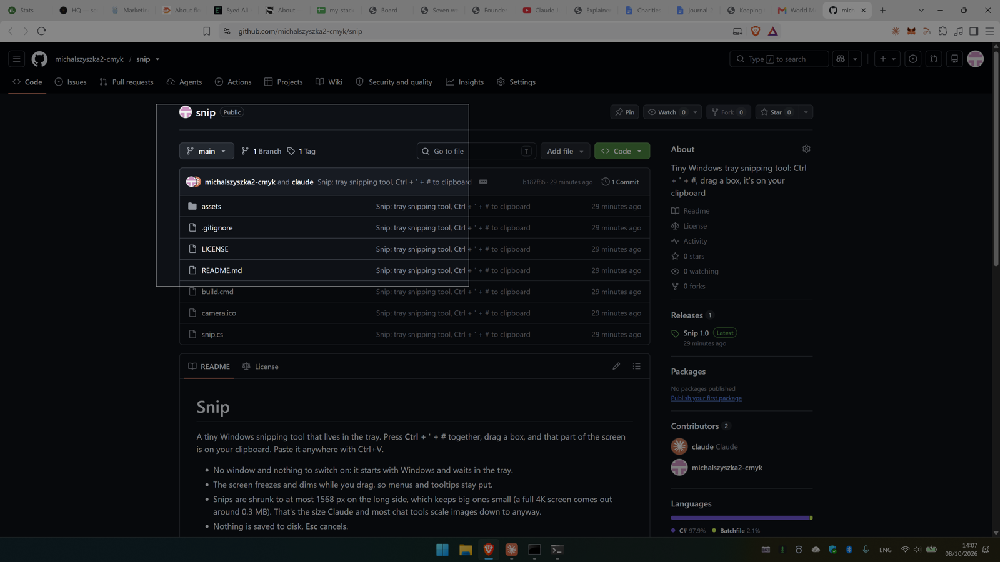
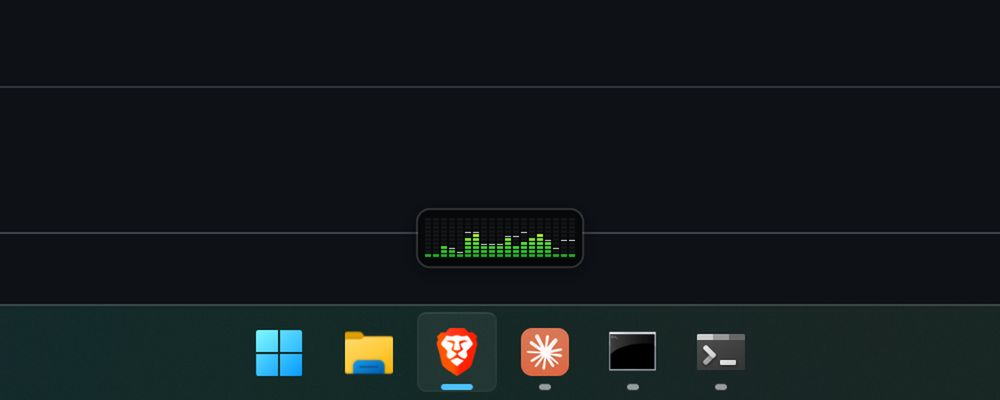

Snip
Press one key combination, drag a box, and that part of the screen is on your clipboard.

What it's about
I paste screenshots into Claude all day and wanted the shortest path from screen to clipboard. Snip waits in the tray with nothing to open. The screen freezes and dims while you drag, so menus and tooltips stay put. Snips are shrunk to the size chat tools use anyway, so a whole 4K screen pastes in a moment. Nothing is saved to disk.
How to use
Press Ctrl + ' + # together, drag a box, then paste with Ctrl + V. Esc cancels. Right-click the tray camera for Snip now, Quit or Uninstall.
Download Snip
Source
Double-click snip.exe and it installs itself and starts with Windows. No admin rights. Windows may say "Windows protected your PC": click More info, then Run anyway.
Dictate
Hold a key, talk, let go. The words appear where your cursor is, cleaned up, in any app.

What it's about
I used Wispr Flow until the free tier ran out of words each week. Dictate is my own version with no cap. Speech is recognised on your own PC by an open model from NVIDIA called Parakeet, so nothing leaves the machine unless you add an optional clean-up step, which sends the text to a small language model to fix grammar and punctuation. A Winamp-style meter shows it is hearing you. It understands English and Polish.
How to use
Hold Right Shift, speak, release. Esc while holding cancels. The tray icon turns dictation on and off.
Download Dictate
Source
Sign in to GitHub first: the repo is private, so the link only works for people I have added. Run the setup, no admin rights. Windows may say "unknown publisher": click More info, then Run anyway. The speech model downloads on first start.